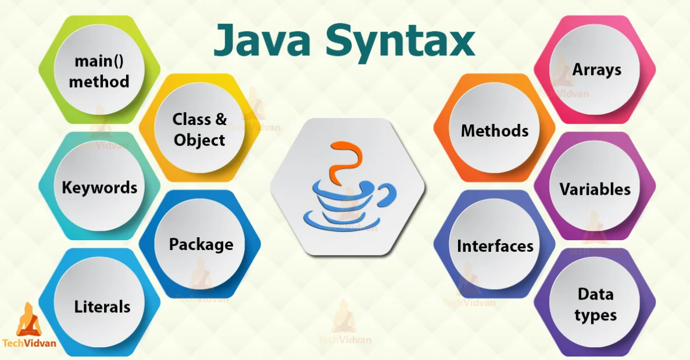

Introduction to Java

Java is a high-level, class-based, object-oriented programming language designed to have as few implementation dependencies as possible. It is a
general-purpose language that is designed to be platform-independent, which means that Java programs can run on any device that has a
Java Virtual Machine (JVM) installed.
Basic Syntax Of Java

Java's syntax is similar to other C-based languages. Here are some basic components:
- Class: Java programs are organized into classes. A class is a blueprint for objects.
- Main Method: The entry point for any Java application is the `main` method.
- Statements: Java statements end with a semicolon (`;`).
- Comments: Java supports single-line (`//`) and multi-line (`/* */`) comments.
public class HelloWorld {
public static void main(String[] args) {
System.out.println("Hello, World!");
}
}